au ⋅
av =
au+v,
(au)v
= auv,
au :
av =
au-v,
(ab)u
= aubu,
( )u
= 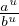.
)u
= 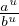.
Funktsioone kujul y = xa,a ∈ R nimetatakse astmefunktsioonideks. Tüüpilised astmefunktsioonid on
Lisaks on reaalarvuliste astendajatega arvutamisel vaja teada
järgmiseid põhireegleid:
a0 = 1, kui
a≠0,
a1 = a,
an = a ⋅ a ⋅… ⋅ a (n tükki), kui n ∈ N,
a-n = 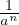, kui a≠0 ja n ∈ Z või a > 0 ja n ∈ Q,
Kui astendajateks on ratsionaalarvud st. arvud, mida saab väljendada kujul 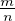, nii et m ∈ Z ja n ∈ Z+, siis kehtivad ka järgmised arvutusvalemid:
au ⋅
av =
au+v,
(au)v
= auv,
au :
av =
au-v,
(ab)u
= aubu,
()u
= 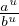.
Astmefunktsiooni sisaldavate võrrandite lahendamisel on
meil kasu järgmistest järeldustest:
kui au =
av, siis u =
v või a = 1. Kui
au =
bu, siis a =
b või u = 0 ning
lisaks a = -b, kui
u on paarisarv.
Liitprotsendiline kasvamine tähendab mingi algse suuruse muutumist mingi protsendi võrra igas konkreetses ajaühikus ning seda väljendatakse valemiga
kus c on algne suurus, p on kasvamise protsent ning n on ajavahemike arv. Liitprotsendiline kahanemine on analoogiliselt
kus liitmistehte asemel lihtsalt lahutame. Näiteks, kui võtame mõnelt kahtlaselt sõbralt laenu 100 EUR intressiga 10% päevas ja võtame laenu kaheks nädalaks, siis peame lõpuks tagasi maksma c = 100,p = 10,n = 14
eurot.
Funktsiooni kujul y = 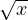 nimetatakse ruutjuureks. Ruutjuure määramis-
ning muutumispiirkonnaks on vahemik [0;∞]. Ruutjuur on kogu määramispiirkonnas pidev
ning kasvab rangelt.
Funktsiooni kujul y = 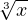 nimetatakse kuupjuureks.
Kuupjuure määramis- ning muutumispiirkonnaks on vahemik
[-∞;∞]. Funktsioon
on kogu piirkonnas rangelt kasvav ning pidev. Funktsioon on
paaritu ning tema graafik on sümmeetriline nullpunkti
suhtes.
Funktsioon kujul y = 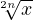 on määratud vahemikus
[0;∞] ning samuti
tema muutumispiirkond on [0;∞]. Funktsiooni graafik on kogu ulatuses
kumer.
Funktsioon kujul y = 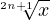 on määratud
vahemikus [-∞;∞] ning samuti
tema muutumispiirkond on [-∞;∞]. Funktsiooni on kogu määramispiirkonnas
pidev ja rangelt kasvav. Funktsiooni graafik on nõgus, kui
x < 0 ning kumer kui x
> 0.
Funktsiooni kujul y = cax,
kus a > 0,a≠1 ja x
∈ R, nimetatakse eksponentfunktsiooniks.
Eksponentfunktsioonide määramispiirkonnaks on hulk
R =
[-∞;∞].
Omadused:
Arvu n logaritmiks alusel a nimetatakse arvu m, millega alust a astendades on tulemuseks arv n. Sümbolites:
Arvu logaritmi omadusi:

Logaritmfunktsiooniks
nimetatakse funktsiooni kujul y
= log
ax, kus a >
0 ja a≠1. Sellisel kujul funktsioon on
pöördfunktsiooniks eksponentfunktsioonile kujul y = ax.
Logaritmfunktsiooni määramispiirkonnaks on kogu positiivsete
reaalarvude hulk {x ∈
R,kusx >
0}.
Muutumispiirkonnaks on kogu reaalarvude hulk R.
Logaritmfunktsiooni omadused:
Funktsioonid esitatavad kujul
iga x korral, kus p ehk
periood on vähim positiivne
arv, mille korra võrdus kehtib, nimetatakse perioodilisteks funktsioonideks.
Perioodilised on trigonomeetrilised on näiteks funktsioonid
sin, cos ja tan vastavalt perioodidega 2π, 2π ja
π. Funktsiooni perioodilisuse
näitamiseks on vaja näidata, et leidub periood p.
Funktsiooni y = sinx nimetatakse siinusfunktsiooniks. Funktsiooni
määramispiirkonnaks on reaalarvude hulk R ning muutumispiirkonnaks on vahemik
[-1;1].
Siinusfunktsioon on paaritu
ning tema graafik on sümmeetriline koordinaatide alguspunkti
suhtes. Siinusfunktsioon on perioodiline perioodiga
2π.
Nullkohtadeks on argumendid …,-2π; - π;0;π;2π,… ehk {nπ|n ∈ Z}.
Positiivsuspiirkondadeks on vahemikud


Negatiivsuspiirkondadeks on vahemikud


Funktsiooni kasvamisvahemikud on
Funktsiooni kahanemisvahemikud on
Funktsiooni y = cosx nimetatakse koosinusfunktsiooniks.
Funktsiooni määramispiirkonnaks on reaalarvude hulk
R ning muutumispiirkonnaks on
vahemik [-1;1].
Koosinusfunktsioon on paaris
ning tema graafik on sümmeetriline y-telje suhtes. Funktsioon on perioodiline perioodiga 2π. Tema seos
siinusfunktsiooniga on
mille abil saame ka tuletada tema nullkohad, positiivsus-,
negatiivus-, kasvamis- ja kahanemisvahemikud. Ehk siis
nullkohtadeks on argumendid …,-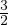π; - ;0;
;0; ;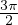,… ehk {nπ
+ 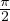|n ∈ Z}.
;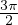,… ehk {nπ
+ 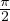|n ∈ Z}.
Positiivsuspiirkondadeks on vahemikud
Negatiivsuspiirkondadeks on vahemikud
Funktsiooni kasvamisvahemikud on

Funktsiooni kahanemisvahemikud on
Funktsiooni y = tanx, kus x≠(2n + 1) ,n ∈ Z nimetatakse
tangensfunktsiooniks.
Tangensfunktsiooni määramispiirkonnaks on hulk R\(2n + 1)
,n ∈ Z nimetatakse
tangensfunktsiooniks.
Tangensfunktsiooni määramispiirkonnaks on hulk R\(2n + 1) ,n ∈ Z.
Muutumispiirkonnaks on terve reaalarvude hulk R. Tangensfunktsioon on paaritu funktsioon ning tema graafik on
sümmeetriline koodinaatide alguspunkti suhtes.
Tangensfunktsiooni perioodiks on π.
,n ∈ Z.
Muutumispiirkonnaks on terve reaalarvude hulk R. Tangensfunktsioon on paaritu funktsioon ning tema graafik on
sümmeetriline koodinaatide alguspunkti suhtes.
Tangensfunktsiooni perioodiks on π.
Funktsiooni y = arcsinx nimetatakse arkussiinuseks. See on tinglikult funktsiooni sinx pöördfunktsioon, kui arvestame, et
Arkussiinuse määramispiikond on vahemik [-1;1] ning muutumispiirkonnaks on
ning tegemist on paaritu
funktsiooniga, mille ainus nullkoht on x0
= 0. Positiivsuspiirkond on
0 <
x ≤ 1, negatiivsuspiirkond on -1 ≤ x <
0. Kasvamispiirkond on
0 <
x ≤ 1. Kahanemispiirkonda pole.
Funktsioon y = arccosx
nimetatakse arkuskoosiinuseks,
ning analoogselt on funktsiooni cosx
pöördfunktsioon, tingimusel, et
Seega arkuskosiinuse määramispiikond on vahemik [-1;1] ning muutumispiirkonnaks on 0 ≤ x ≤
π.
Funktsiooni y = arctanx
nimetatakse arkustangensiks,
ning see on tangensfunktsiooni pöördfunktsioon, tingimusel et
Funktsiooni määramispiirkonnaks on reaalarvude hulk
R ning muutumispiirkonnaks
vahemi [- ;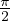].
Arkustangentsi funktsioon on paaritu.
;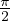].
Arkustangentsi funktsioon on paaritu.